Sistemas de Frenado
Horquillas
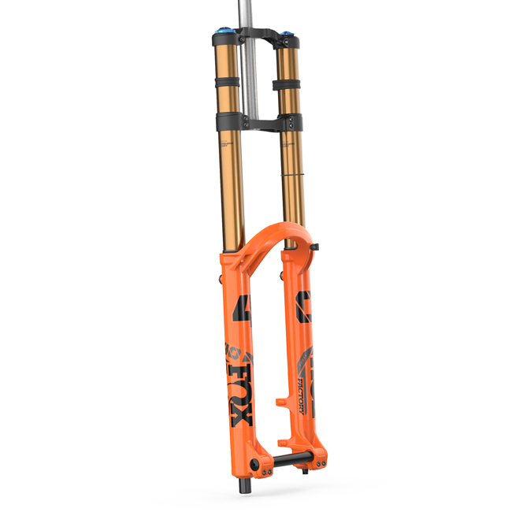
Fox 40 Factory
Es la horquilla de descenso por excelencia, reconocida por su rigidez, su suavidad extrema gracias al recubrimiento Kashima y su capacidad para absorber los impactos más brutales sin inmutarse.
Ver Precio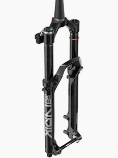
Rockshox Lyrik Ultimate Flight Attendant
Es la horquilla de enduro inteligente que usa sensores inalámbricos para bloquearse o abrirse automáticamente según el terreno y tu pedaleo.
Ver Precio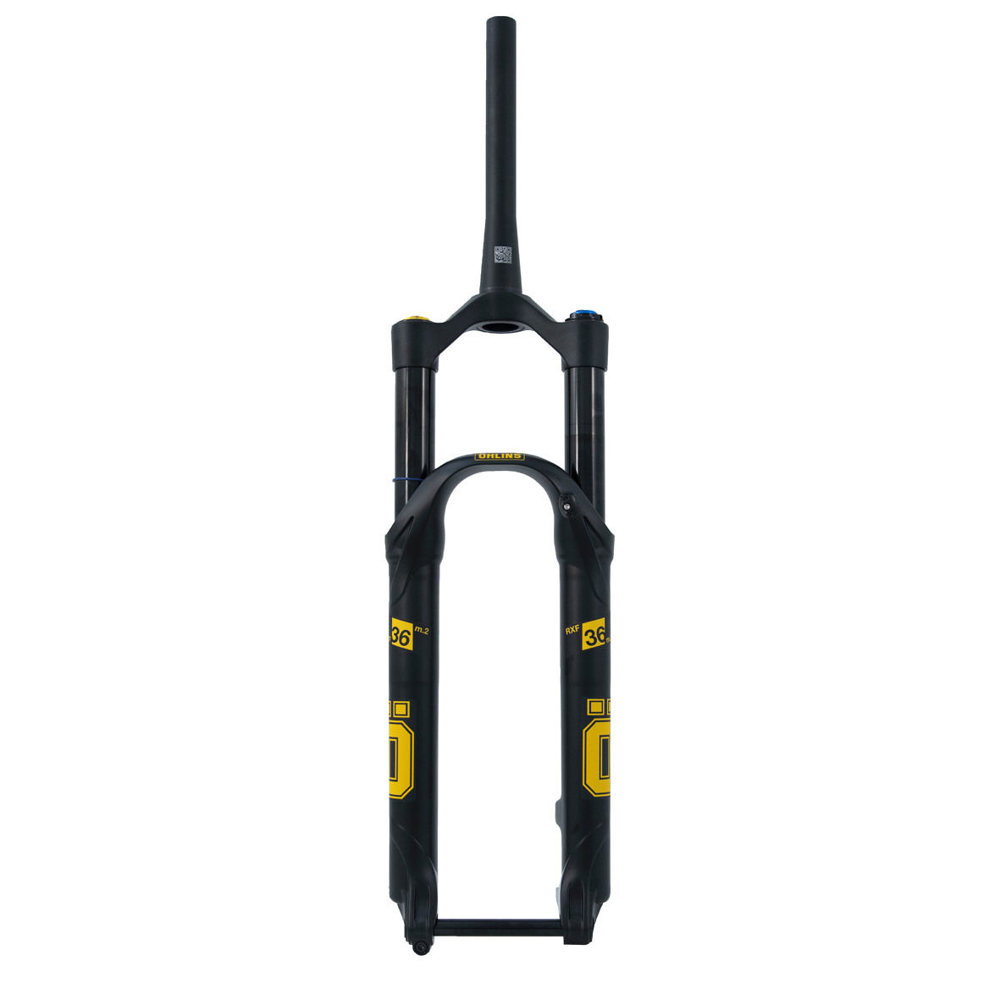
Öhlins RXF36
Es la alternativa de competición sueca que utiliza tres cámaras de aire independientes para un ajuste milimétrico y una sensibilidad ultraprecisa.
Ver Precio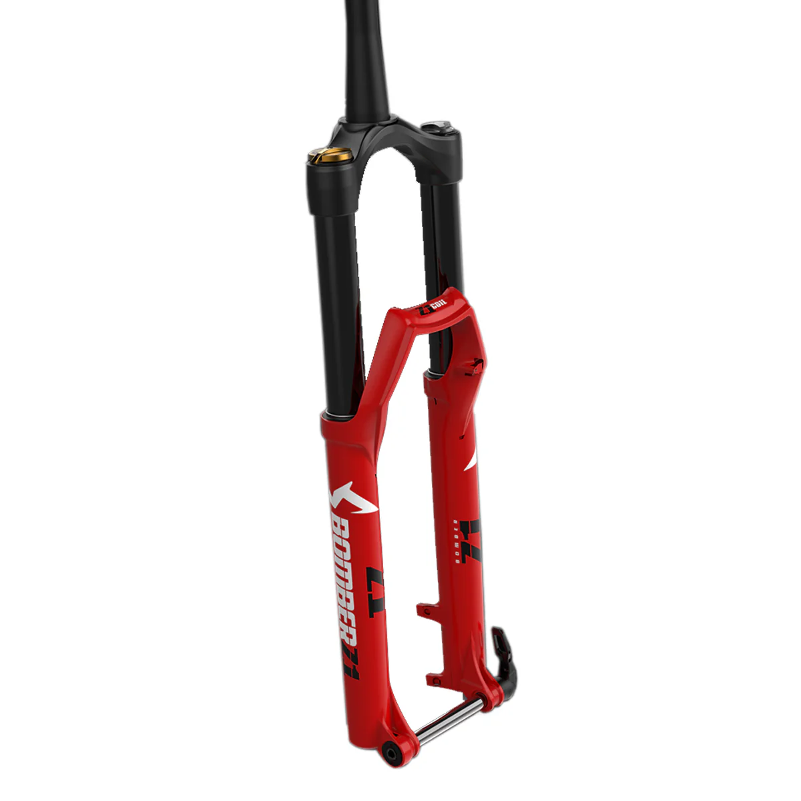
Marzocchi Bomber
Es la horquilla legendaria por su robustez y sencillez, que prioriza la fiabilidad y un tacto ultrasuave gracias a su cartucho de muelle o aire de alta sensibilidad.
Ver PrecioSuspensiones
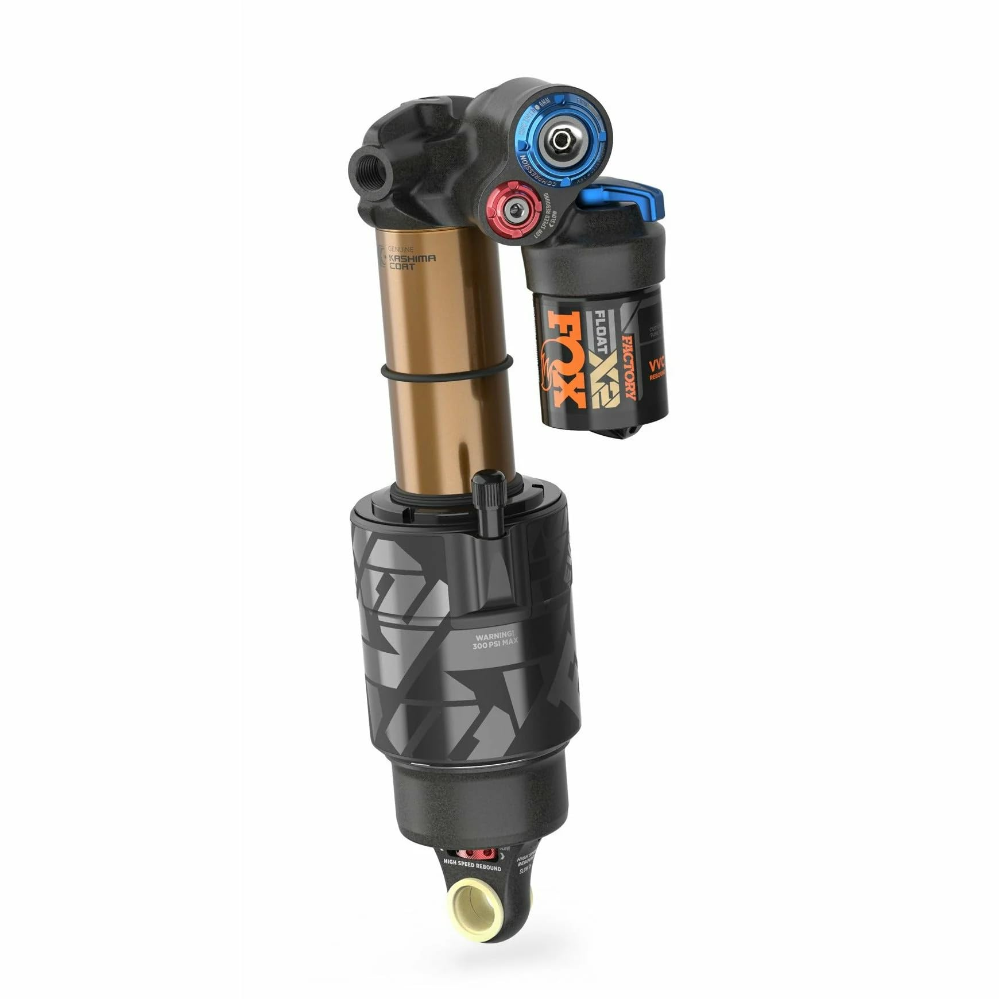
Fox Float X2 Factory
Es el amortiguador de aire tope de gama diseñado para descenso y enduro que ofrece el máximo ajuste posible de compresión y rebote en alta y baja velocidad.
Ver Precio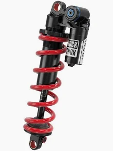
Rockshox Super Deluxe Coil Ultimate
Es el amortiguador de muelle de alta gama que ofrece un tacto ultrasensible y lineal para enduro, con un bloqueo hidráulico para que no contamine el pedaleo en las subidas.
Ver Precio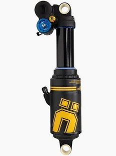
Öhlins TTX22M
Es el amortiguador de aire de doble tubo que ofrece el rendimiento de un muelle con la ligereza y el ajuste de rampa de una cámara de aire de competición.
Ver Precio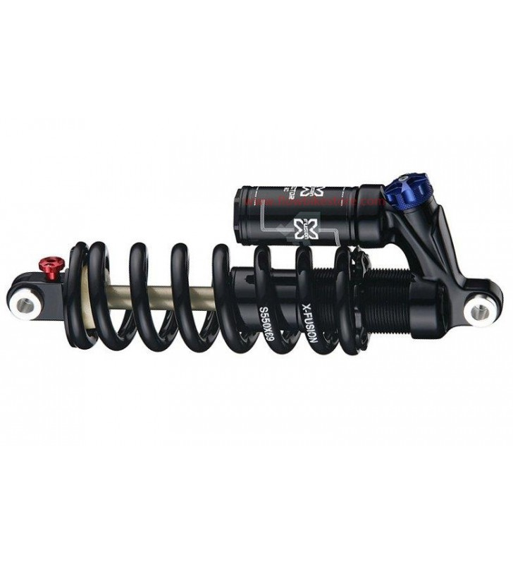
Amortiguador Muelle X-Fusion Vector RC
Es el amortiguador de muelle robusto y económico que ofrece un ajuste externo de rebote y compresión diseñado para resistir el trato duro en descenso.
Ver PrecioTransmisiones
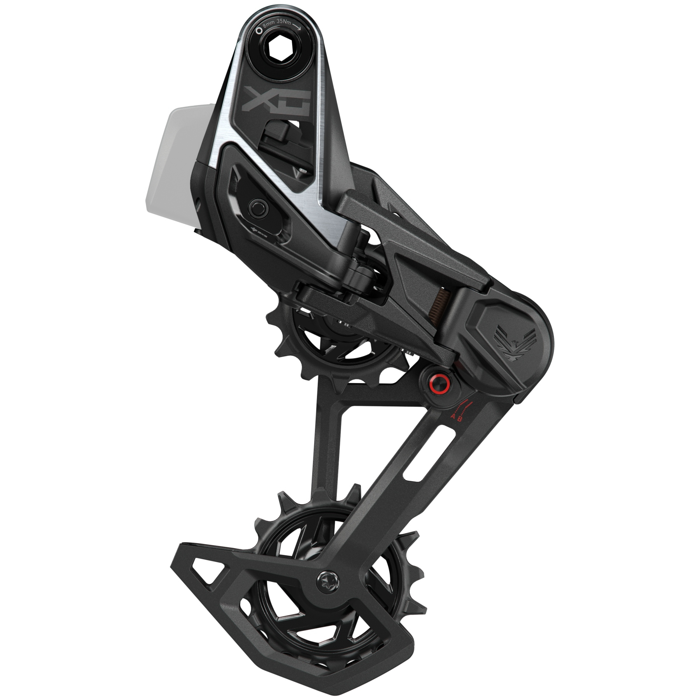
SRAM X0 Eagle Transmission
El más robusto actualmente; se monta directo al cuadro sin patilla y permite cambiar con total suavidad mientras haces fuerza máxima en los pedales.
Ver Precio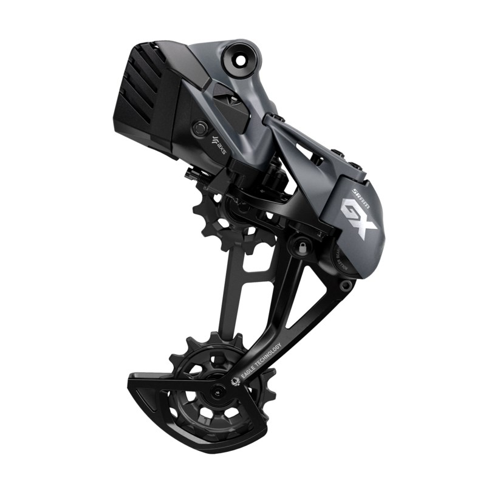
SRAM GX Eagle AXS
La opción electrónica más equilibrada por calidad-precio; ofrece cambios inalámbricos precisos y el sistema de embrague de protección contra golpes.
Ver Precio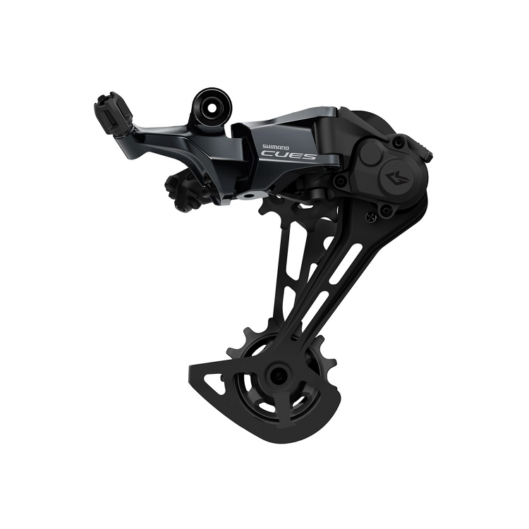
Shimano CUES
La nueva opción de gama media que prioriza la durabilidad extrema sobre el peso, ideal para enduro recreativo o e-bikes con mucho torque.
Ver Precio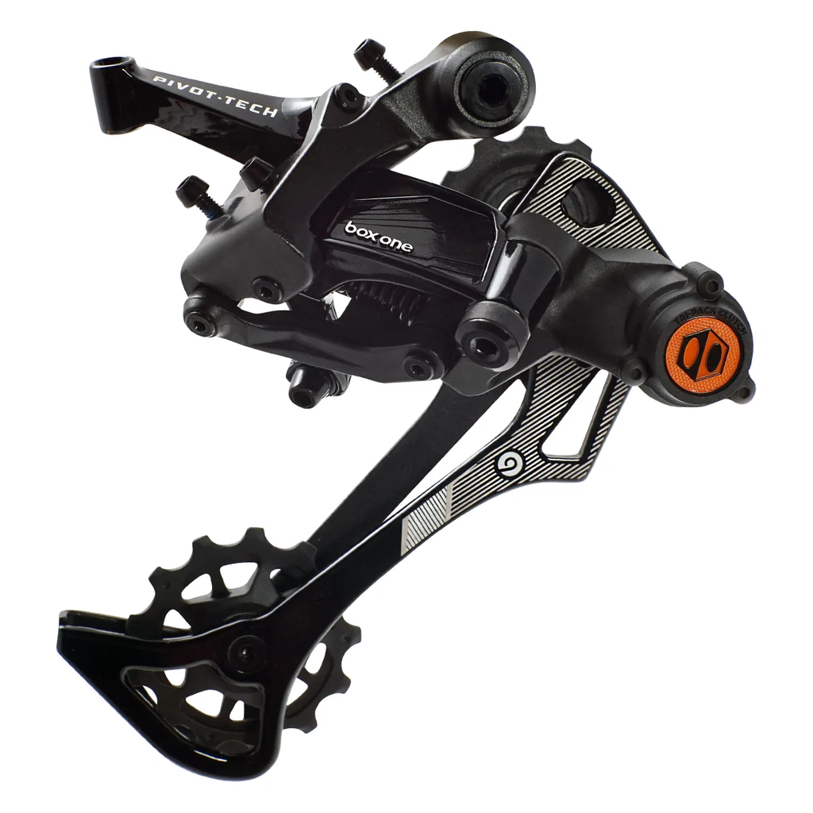
Box Two 11-Speed
Es la transmisión más robusta y fiable para enduro y descenso, diseñada para soportar los golpes más duros sin desafinarse.
Ver Precio